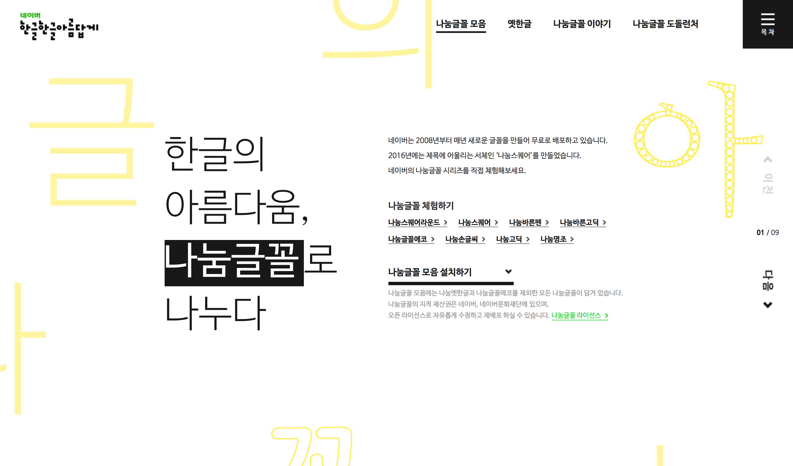
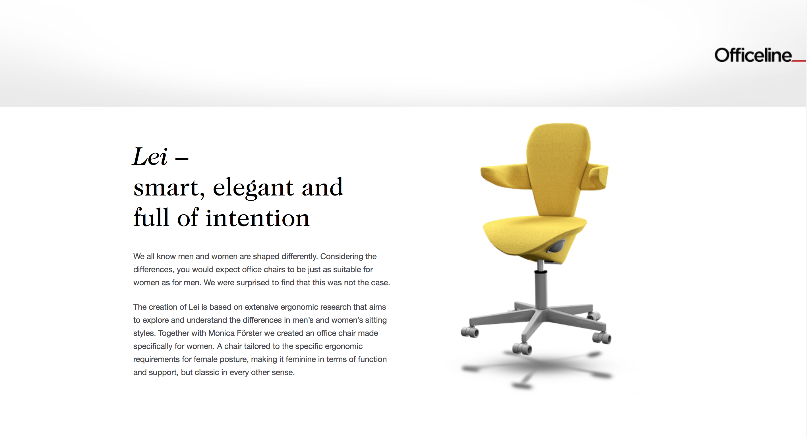
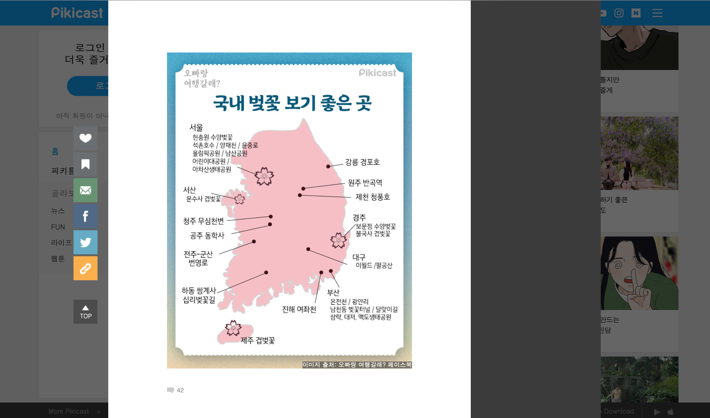

one scroll page
zara

패션 브랜드 답게 이미지를 먼저 보여주어 옷의 정보에 대한 궁금증을 일으킨다.
이미지와 관련 정보간의 연결도 잘 되어있어 정보를 손쉽게 알아낼 수 있다.
nanum
화면 모션이 스크롤의 리듬에 따라 부드럽게 움직인다. 간결하고 부담스럽지 않은 디자인이 좋다.
폰트를 미리 체험해 볼 수 있고 누구나 딱 보면 쉽게 기능을 이용할 수 있도록 설계 되어있다.
officeline
화면의 모션이 먼저 흥미를 끌고, 글과 이미지도 적절하게 배치되어 있다.
pikicast
스토리를 클릭하면 스크롤만 내려도 공유,저장,좋아요 표시 등을 할 수 있고 댓글까지 읽고 나올 수 있어 편리하다.